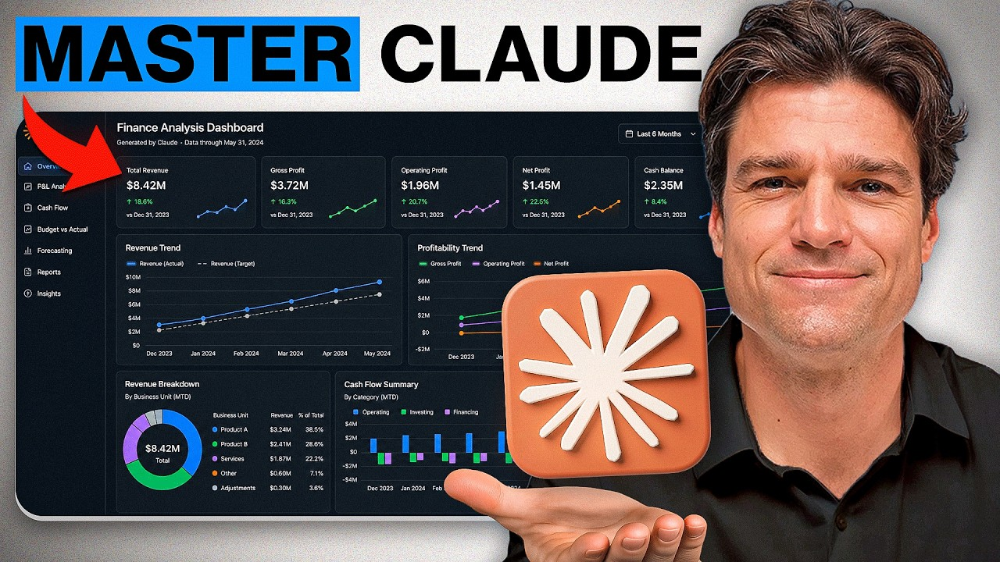
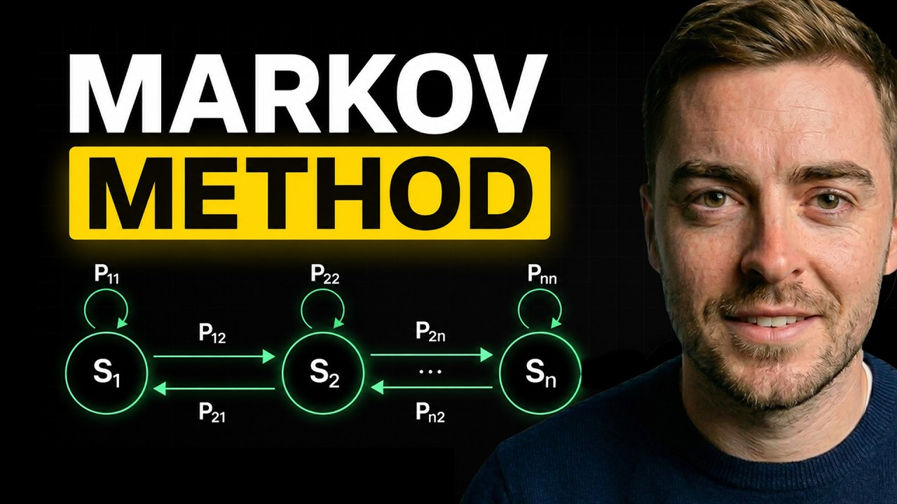

Everything from the reel, in order.
Every link is free on YouTube, with no signup. Each one goes straight to the video on the creator's own channel.
Don't just watch. Open Claude in a second window and do each step as you go, on a company or a strategy you care about.

23 MINClaude for Finance, from zero
Full Claude For Finance Beginner Tutorial (Complete Guide). Start here if you've never used Claude for finance work. It's a beginner walkthrough, so you get the setup and the basics before the two harder videos.
Build a DCF with Claude
Ex-JPM Banker Tests Claude (AI) With Building a DCF in Excel. A former J.P. Morgan banker builds a DCF model in Excel with Claude, step by step. The DCF is the core valuation model in banking, so this is the one to follow along with.

27 MINRebuild a quant strategy with Claude Code
I Re-Created A Quant Trading Strategy With Claude Code. The most-watched of the three. He re-creates a quant trading strategy using Claude Code, which is the jump from asking Claude questions to having it write and run the code.
All three links checked live on 12 Nov 2026. View counts as of the same day.
Honest notes.
Now build something with it.
After the three videos, my guide has five quant projects you can build with Claude, each with the exact prompt. Follow for the next list.